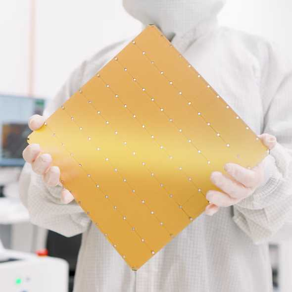

THE FRONT PAGE
EDITOR'S NOTE: As we bury the precision of the x87 FPU under layers of automated abstraction, we must decide if we are building a digital future or merely presiding over its expensive, noisy decay. #The tension between legacy engineering craftsmanship and the sprawling, litigious opacity of the AI era.
A lone developer’s sketch for a language treating LLMs as first-class agents—not APIs—resurfaces old debates about abstraction leaks and whether we’re building tools or just wrapping chaos. The tradeoff? Elegance now, debugging nightmares later.
By stripping UI components down to semantic HTML and zero external dependencies, Oat attempts to reclaim the browser from the bloat of modern build pipelines. The tradeoff is a return to manual state management, a tax many developers may find too steep to pay for the sake of purity.
A new single-file HTML format called *Gwtar* promises static-site efficiency without build tooling, but its rigid constraints may alienate developers accustomed to modern frameworks. The tradeoff: simplicity now, or technical debt when dependencies inevitably return.

Engineering teams are increasingly opting for aggressive quantization and speculative decoding to bypass the physical limits of current hardware. While these methods shave milliseconds off response times, they introduce a non-deterministic decay in reasoning quality that many developers are currently choosing to ignore.
This framework layers Kubernetes-style orchestration over autonomous agents, a logical but heavy-handed response to the messiness of non-deterministic code. While it offers a semblance of control, the trade-off is a massive increase in infrastructure complexity for logic that still lacks a formal proof of correctness.
MODEL RELEASE HISTORY
No confirmed model releases were detected for this edition date.